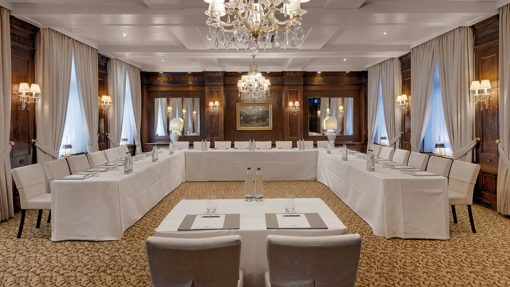

Modul 00
Grundlagen für die Leitungen
- Wer
- Leitungen von Empfang, Reservierung, Veranstaltungen, Gastronomie, Küche, Spa, Personal und Verwaltung, dazu die Geschäftsführung
- Dauer
- Zwei Stunden
Was das Team danach kann
- unterscheiden, wofür KI im Haus taugt und wofür nicht
- erkennen, welche Angaben in einen Auftrag an die KI dürfen
- einen Auftrag so formulieren, dass ein brauchbarer Entwurf entsteht
- für die eigene Abteilung zwei Aufgaben benennen, mit denen sie beginnt
Beispiel aus dem Haus
Die Fragen und Antworten der Website erklären, dass Hunde willkommen sind, ein Babybett kostenlos bereitsteht, die Rezeption rund um die Uhr besetzt ist und das WLAN nichts kostet. Daraus entsteht gemeinsam die erste Hausquelle: eine Sammlung geprüfter Antworten, aus der jeder spätere Entwurf schöpft.
Quelle: Website, Häufig gestellte Fragen